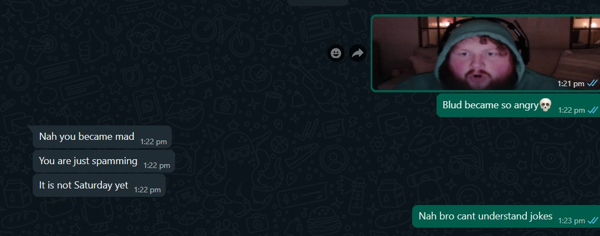

BLS Community was created on 17 August 2022.During that time most of the group had 1 purpose only.whatever it was it only had 1 purpose.but this time it was different,it was for multiple purposes!At first,the group was doing very well! and the number of people starts to grow too.in 2 months the group reached 50 people.But right after that,the owner had to face his first ever obstacle.
CopyCats are not an actual problem,there just annoying.and thats literally what happend to the community.But there is a twist,the owner wanted to create a 2nd group (which is a bad idea) and following this trend people started to make their own bls community too.And they actually got something from it! many people got 50+ members on their fake bls community grp. there were like 10 of them.even though the owner tried to stop them,after trying alot he just gave up.And those fake BLS Communitys died shortly after.Once again,some random dudes tried to make fake bls community's again in 2024 but well...iykyk>:)
Things were going good (again) but guess what? at 12 december 2022 a random guy by the name of rabies decided to spend 6 ducking hours of his life spamming.imagine doing that lol. and for this reason many people left.But right after that for some reason,At february the group went silent.And for some reason many people left.Even though the story dont add up it happend.More then 10 people left but guess what?The owner did not care and revived the group again!even though things like this happens kinda often this was and will be the longest period the group was ded for
The rest of the 2023 was...decent.The thing that happend though,was that BLS COMMUNITY finally became the most popular group of STD V.And it also reached 100+ members for atleast 3 times.For stats it was a great year.But,overall it wasnt.I mean we can all agree that 2023 was a cringe year.But on 2nd october, the owner decided to delete the first group.Marking the start of the 2nd chapter.
The early 2nd chapter was also...BORING! literally nothing happend so uhmm...here is a pic of some specific guy being angry
This is BY FAR the most unusual thing here.u see at first a young lady by the name of KAYSAN send a link to his youtube channel. it was all OK until MYSELF decided to create a channel.At first i never really wanted to go to war cuz she was growing pretty fast.But then I thought to myself,SCREW IT! imma try to beat her :) at first we were all growing pretty fast. even though views was a problem it didnt really matter.But then,WORLDYT stopped growing which gave EXCIL YTR enough time to grow the sub difference.and it got so worse that the sub difference was 24!but WORLDYT would soon start growing again!this time slowly but,steadily.EXCIL YTR tried his best to make sure WORLDYT dont pass him but,it was too late.WORLDYT would start to get insane amount of views.And within 12 hours WORLDYT would reach the 100 subs milestone.currently the difference between WORLDYT and EXCILYTR is 44.anyways uhmm...go to the BLSC Shop and give WORLDYT some subs.Right after that subs played a key role on the group. but some nerds wanted to change that.
At first things were looking pretty good.But even though ppl were a bit unhappy about the subs thingy it was still fine.But then one day the owner said that if WORLDYT doesnt reach 194 subs he is gonna disadmin everyone.And one more warning was enough for ppl to start the rebel.And at first a specific nerd said "iam gonna be a bwetter owner" and guess what? he literally only admined his friend,kept deleting messages and did many bad stuffs.He wasnt a good owner but rather a mid owner,EVEN WORSE.But the rael owner luckily destroyed that nerds group.but as him and some other nerdy ppl destryoed the group,chapter 3 started!
Chapter 3 started very intrestingly,a nerd vs the owner.THE NERD DIDNT EVEN STOOD A CHANCE AGAINST THE owner.and even though another rebel happend it was very lame.Currently the real owner controls this group and almost nothing happend.
\so one day the nerd decided that he will try to destroy the legacy of the owner once again.he created another group called relatable gamblings.which reached 131 members before being clapped by the owner.from that point on,the owner destroyed relatable gamblings for exactly 10 times.AND NOW THAT NERD IS CREATING A WEBSITE JUST LIKE THIS LOL